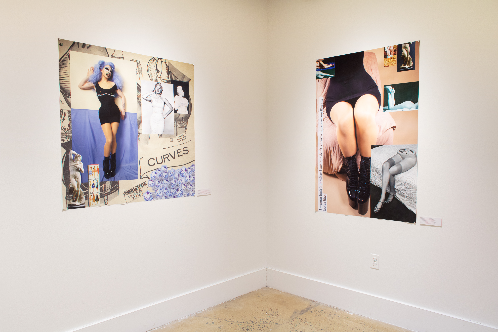
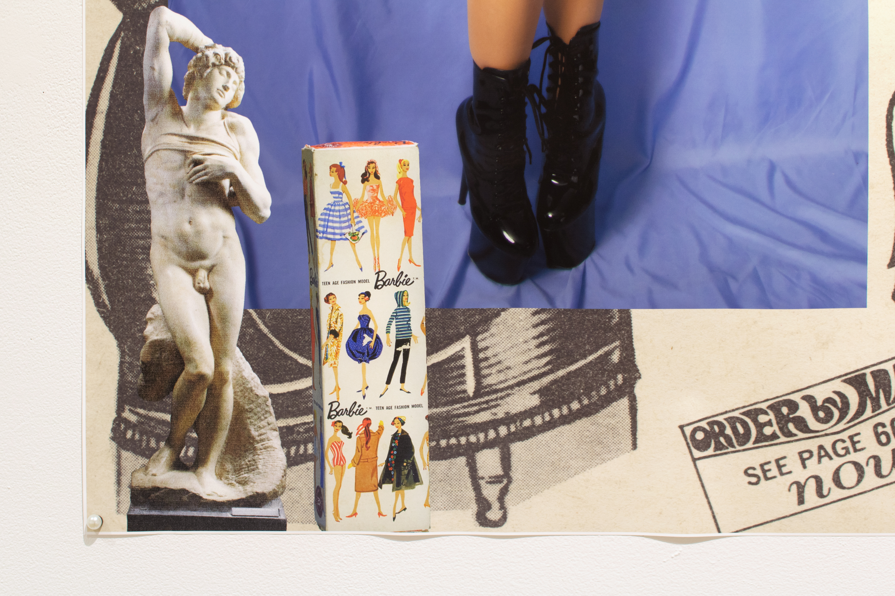
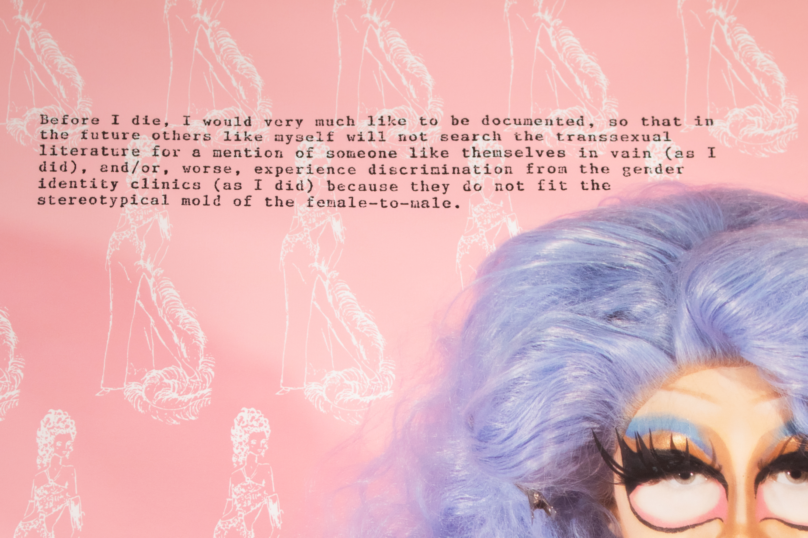

YOU LOOK MORE LIKE ME THAN ME
Solo Exhibition at Pratt Institute's Photography Gallery in Brooklyn, NY
February 21-25, 2022

CURVES (60" x 60" Archival Photo Print)
Wall Plaque for CURVES

Detail of CURVES
what i am (65" x 40" Archival Photo Print)
Wall Plaque for what i am
Detail of what i am
Detail of what i am
 Triptych (40" x 65" Archival Photo Print)
Triptych (40" x 65" Archival Photo Print)
Wall Plaque for Triptych
 Detail of Triptych
Detail of Triptych
 pearls (20" x 30" Archival Photo Print with flatback pearls, assorted stickers, lace, and vintage lingere catalogs)
pearls (20" x 30" Archival Photo Print with flatback pearls, assorted stickers, lace, and vintage lingere catalogs)
 Details of pearls
Details of pearls
Before I die (65" x 40" Archival Photo Print)
Wall Plaque for Before I die

Detail of Before I die
Detail of Before I die
to die like one (60" x 60" Archival Photo Print)
Wall Plaque for to die like one
Detail of to die like one
A STUDY OF MEN (40" x 65" Archival Photo Print)
Wall Plaque for A STUDY OF ME
Detail of A STUDY OF MEN